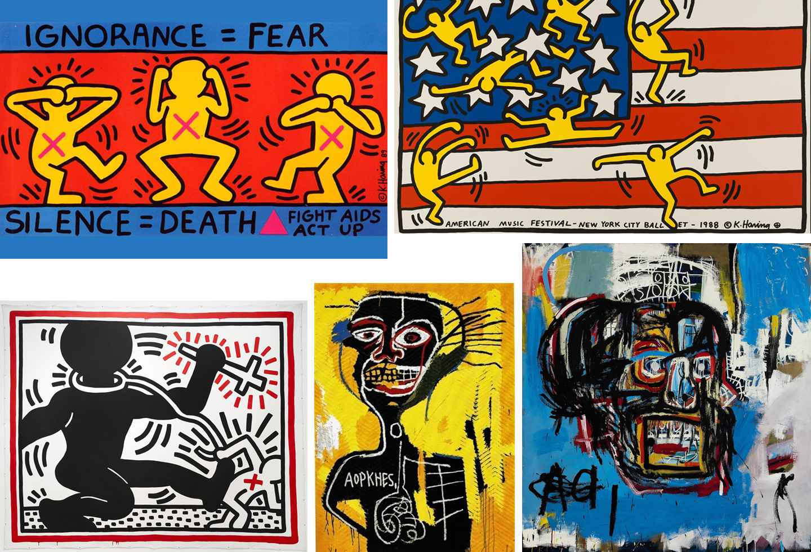

Day 6 Kim Jung Un
This morning I had a phone call with my mom in South Korea, she started a conversation with Kim Jung Un - North Korea leader.
Protest Art
Like everybody knows, North Korea and nuclear program became to the most common topic for all the people around the world. Somebody would just neglect or somebody would get terrified. As a designer and artist, we could raise our voice by our own medium. I decided to make a "Protest Art," and explore historical precedences.
Precedences: Keith Haring and Jean-Michel Basquiat
I found two creative protest artist, Keith Haring and Jean-Michel Basquiat. They were both fighting with inequity of gender, race, and status using their art. They both used very bold color to make their position vividly. There can be found a sense of humor and sarcasm, a satire, and full of honesty.
Image source: www.indexsocial.info, creators.vice.com, news.artnet.com, www.wikiart.org
Procedure
I decided to make this artwork for protesting against nuclear weapon. I would like put some sarcasm and satire like other protest artist, therefore I chose the way to make "mockery" on this symbolic person, Kim Jung Un through my work. I found many funny images of him from internet, and also put President Trump's image who is in opposition to him.
Artwork
I chose to express my hommage to Andy Warhol, whose art could be the perfect fit to express sarcasm.
Future iteration : This can be used as a picket when the demonstration actually happens, or it can be applied to graffiti art so that the message will be spread whoever passed by.